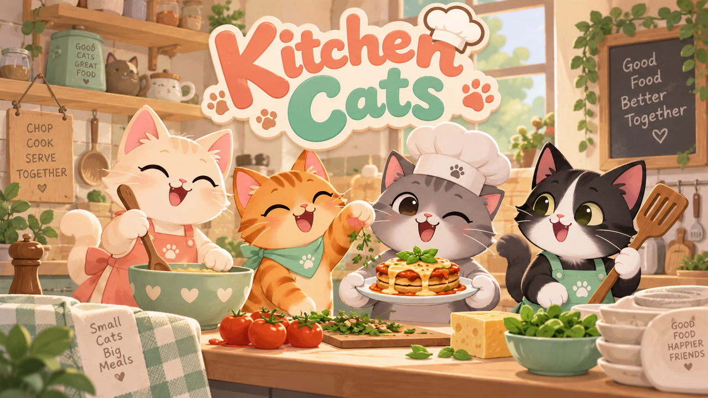

Cream whisker
OFFLINE SOLO KITCHEN FOR PHONES
Good soup.
Good soup.
Better company.
Pick a cat chef and run a complete offline cooking shift directly on your phone.
Offline after setup
2–4 cat chefs
Solo practice too
Download for offline playBuild kitchen-cats-20261002-r13
Wait for “Offline ready” above before disconnecting. On your phone, add this page to your Home Screen for easy reopening.
TODAY'S SPECIAL ♡ made together

Never too many cats. CREAM · PEACH · MINT
LOCAL EDITION
Manual WebRTC pairing. Both phones must download this game online first. Then use the same Wi-Fi (no internet required). Copy the offer to your friend, and their answer back here using a local sharing method. No room discovery. Local pairing depends on browser and router support. Keep the host screen open during play.
Idle
MOVE
ACT
PAWS · Empty paws
SHIFT COMPLETE
Pawsitively delicious.
01 / PICK
Grab tomatoes or carrots from the top counter.
02 / PREP
Chop at the board. Anyone can collect the finished prep.
03 / SIMMER
Drop chopped veg in the soup pot and wait for it to finish.
04 / SERVE
Bring matching soup to the service window before the order expires.
CHEF’S TIP · Use the team counter to hand ingredients to a friend. The board and pot are shared, so teamwork is always faster.